Fase 4 · Tanda 2 de 3 · El entrenador
Mi día,
pasar lista
e historial
Las tres pantallas del entrenador, capturadas contra el entorno de QA con el dataset grande, a 1440×900, con el mismo guión de medición que las seis anteriores. Diez estados, antes y después. Es la primera tanda cuyo diagnóstico no venía hecho: no había issue que la midiera, así que la lista de abajo salió de leer las tres pantallas contra DESIGN.md y sus nueve reglas con nombre.
La consigna de la fase —cambia cómo se ve, no qué hace— se cumple con la suite entera en verde: 3101 tests en 187 archivos, ningún endpoint tocado, ninguna regla de negocio movida. Y con una advertencia que vale para todo el documento: esta es la pantalla que originó la regla del estado flaco —el tablero del entrenador salió a producción con 250px de aire muerto por diseñarse con un prototipo de datos abundantes—, así que acá el estado flaco se capturó primero.
1 · El diagnóstico, por gravedad
Ocho hallazgos, ordenados por lo que le cuestan a la persona que usa la pantalla y no por lo
que cuestan de arreglar. Los cinco primeros se arreglaron; el sexto y el séptimo también; el
octavo está medido y explicado sin cerrar. Cada uno nombra la regla de
DESIGN.md que rompe.
-
El día sin sesiones no decía absolutamente nada.
Un domingo,
La regla del estado flaco · D11SessionCarddevuelvenully la grilla se colapsaba a una columna: la pantalla cuyo subtítulo promete «tu próxima sesión» se quedaba sin mencionar el día. Cero de las tres partes que pide D11 —qué falta, por qué, qué hacer— en la pantalla que dio origen a la regla. El mismo defecto, más chico, dentro del listado: el filtro por nombre sin coincidencias decía «revise el filtro o bórrelo» sin nada que apretar. -
«Empieza en 700 minutos», a 46px.
La cifra más grande de la pantalla era la cuenta regresiva en minutos crudos, que solo es una cantidad legible durante una hora. Abierta a las 03:20 de un viernes cuya primera sesión es a las 15:00, decía 700. Y el mismo hueco cambiaba de significado —minutos antes de empezar, hora una vez empezada—, así que había que leer el antetítulo para saber qué era el número.
La regla de la forma · un formato por columna -
Cuatro dibujos distintos de la misma medición.
La composición de una sesión —presentes, tardanzas, justificados, ausentes— se dibujaba como barra proporcional en «Últimas listas», como cuatro insignias de color en el historial y en el paso de confirmación, y como una quinta barra con otra paleta en el recibo. En el historial eran 40 píldoras de color por página compitiendo con el único botón rojo de la pantalla — exactamente la tabla que
Don't: un cuarto vocabulario para algo que ya tiene unoRecentSessionsListya había retirado, con el porqué escrito en su propio archivo. -
El asistente medía 364px de ancho en una columna de 1152.
La regla del aire · «cosas desalineadas»<div class="mx-auto max-w-3xl">dentro de un<main>que es una columna flex: el margen automático en el eje cruzado cancela el estirado, así que la tarjeta quedaba shrink-to-fit y el tope de 768px nunca se alcanzaba. Los cinco horarios del día se apilaban en dos columnas dentro de 364px con 788px de lienzo al lado. -
Dos controles de volver al mismo destino, en el recibo.
El del marco y el de la fila de acciones, los dos a
Deuda anotada · D12b/trainer. Estaba enmascarado mientras cada uno escribía su etiqueta a mano («Volver al Panel del Entrenador» y «Volver al Panel»); el registro de destinos los hizo decir lo mismo y lo dejó a la vista, y un test lo asertaba como tolerado. -
Ningún título de tarjeta usaba Graduate.
«Elija el horario», «Pasar lista», «Confirmar y finalizar», «Distribución de asistencias», «Últimas listas»: los seis a 13,5px en Barlow negrita. El barrido que puso Graduate en los títulos (388e072) no pasó por estas pantallas.
La regla de Graduate -
«3 Presente», «0 Tardanza», «Registrar Otra Asistencia».
Las cuentas se escribían pegando un número al nombre del estado, que es singular por definición, y había tres tablas de sustantivos para los mismos cuatro estados. Más dos botones en Mayúsculas De Título contra el resto de la interfaz, que escribe como se habla.
La regla de las palabras -
La ayuda suelta, y el aire vertical que no cierra.
Una tira permanente de cinco fichas de color más «Toque la ficha para confirmar o cambiar» encima del listado, y un renglón que repetía el título del paso. Y, debajo de todo, el aire vertical del asistente: el paso 1 hace una pregunta con cinco opciones, así que aun con el ancho arreglado le sobran 214px de alto. Eso último no se cerró — ver §8.
D11c · La regla del aire
2 · Las mediciones
Se mide igual que siempre: la distancia entre el borde inferior del contenido más bajo y el fondo de la ventana, dividida por el alto de la ventana, a 1440×900. El reloj del navegador está fijado por toma —viernes 14/08/2026 a las 15:10, el mismo viernes a las 03:20 y el domingo 16— para que el antes y el después describan el mismo minuto y no dos tardes distintas. La sesión de las 15:00 se archiva al principio de cada ronda y el registro es idempotente, así que las dos rondas leen exactamente la misma base.
| Pantalla | Estado | Antes | Después | Qué lo movió |
|---|---|---|---|---|
| Mi día | Sesión en curso · 15:10 | 2% · 21px | 2% · 18px | Ya llenaba la ventana: esta pantalla scrollea. |
| Mi día | Madrugada · 03:20 | 2% · 21px | 2% · 18px | Ídem. Lo que cambió acá es la cifra, no el hueco. |
| Mi día | Domingo sin sesiones | 2% · 21px | 2% · 18px | El hueco era horizontal: 1148px → 565px. |
| Pasar lista | Paso 1 · elegir horario | 26% · 234px | 24% · 214px | La tarjeta pasa de 364px a 768px de ancho. |
| Pasar lista | Paso 2 · lista de 16 alumnos | 0% | 0% | Scrollea con datos: 1317px → 1324px de documento. |
| Pasar lista | Paso 2 · filtro sin coincidencias | 9% · 84px | 2% · 20px | La tira de ayuda salió y entró la salida que faltaba. |
| Pasar lista | Paso 3 · confirmar | 23% · 208px | 22% · 201px | Se fue el renglón que repetía el título del paso. |
| Pasar lista | Recibo de la sesión archivada | 17% · 156px | 18% · 161px | Sube, y a propósito — ver abajo. |
| Historial | Este mes · 10 sesiones | 0% | 0% | Scrollea: 1217px de documento antes y después. |
| Historial | Período vacío · junio | 14% · 122px | 14% · 122px | El estado vacío ya tenía sus tres partes. |
Las seis pantallas anteriores tenían un problema de alto y el porcentaje lo contaba. Estas tres no: Mi día, el historial con datos y la lista de 16 alumnos scrollean, así que su aire muerto vertical es 0-2% y lo era también antes del rediseño. Los 250px de aire muerto que este tablero llevó a producción los cerró la issue #211 llenando la tarjeta con el resto del día, y eso ya estaba hecho. Lo que quedaba acá era ancho —una tarjeta de 364px en una columna de 1152, un resumen de 1148px alrededor de una dona de 260— y lectura: una cifra que nadie convierte, cuatro dibujos de una misma medición y dos controles para un mismo destino. El porcentaje no mide nada de eso, así que los que se mueven son los anchos.
El recibo sube de 17% a 18%, cinco píxeles, y es la misma clase de número que
la ficha médica del representante en la tanda anterior: lo que se fue fue contenido que
sobraba. Su encabezado bajó del paso de titular (26px) al de título de tarjeta (20px), porque
el titular de la pantalla ya lo dibuja PageHeader en la misma tipografía y dos
titulares en una pantalla no ordenan nada. El contenido termina seis píxeles más arriba y el
hueco de abajo mide seis píxeles más. Bajarlo pedía dejar el segundo titular puesto.
3 · Mi día — la cifra que nadie convierte
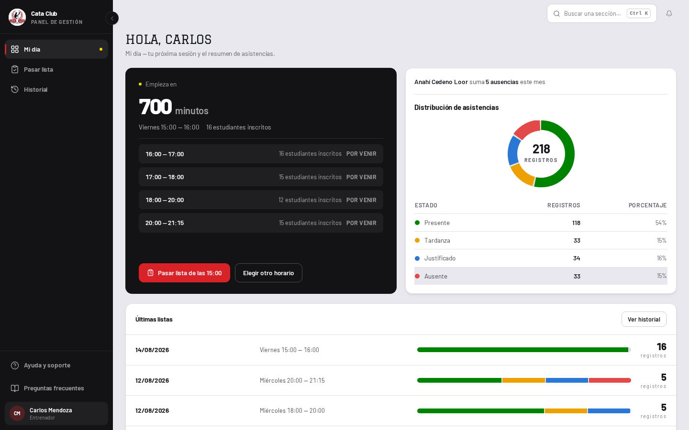
display sin la familia display.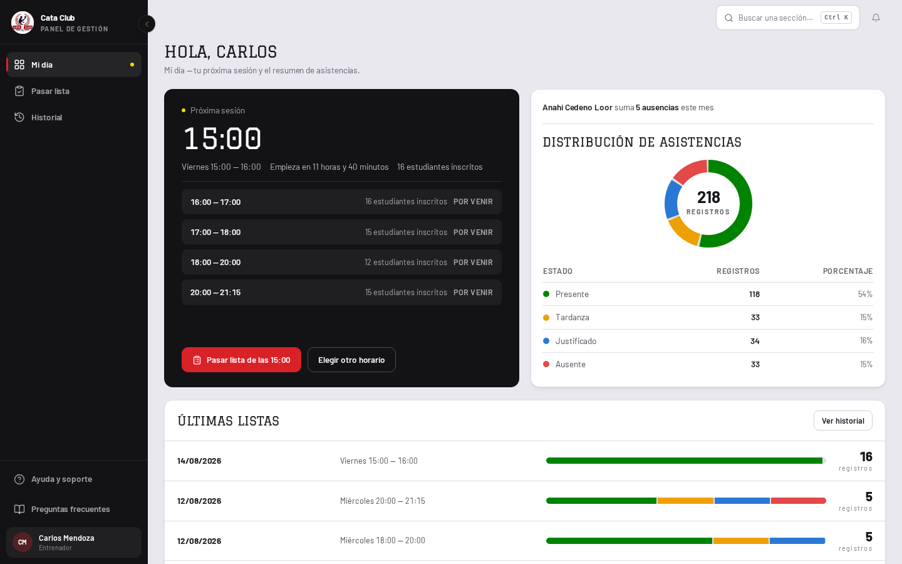
-
El mismo hueco significaba dos cosas distintas.
Antes de empezar la sesión el número era la cuenta regresiva; una vez empezada, la hora. Eso obliga a leer el antetítulo para saber qué es el número, que es justamente lo que un número de 46px promete ahorrarte. Ahora la cifra es siempre la hora de inicio, en los dos estados, y lo que cambia es la línea de apoyo: «Empieza en 25 minutos» o «Hace 10 minutos».
formatTimeUntilStartcambia de unidad en la hora, que es donde una espera deja de contarse en minutos. -
Es el único candado de test que hubo que renegociar en esta pantalla.
SessionCard.test.tsxyTrainerPage.test.tsxasertabangetByText("25")—la cuenta regresiva como cifra grande— y la renegociación está escrita en los dos tests con su porqué. Lo que esos tests protegen de verdad —cuál sesión encabeza, a qué enlace apunta, cómo se llama la acción, y que ningún estado sin sesión deje unhorario=en el árbol— no se tocó.
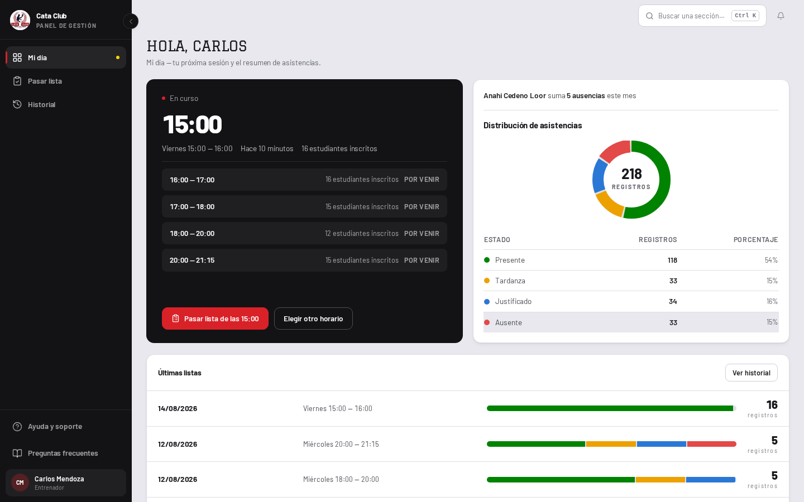
4 · El estado flaco — el domingo
D11b manda diseñar primero el estado flaco, y esta es la pantalla que originó la regla. El estado flaco de «Mi día» no es un socio nuevo: es un día sin entrenamientos, que en este club es sábado por la tarde y todo el domingo — 2 de cada 7 días.
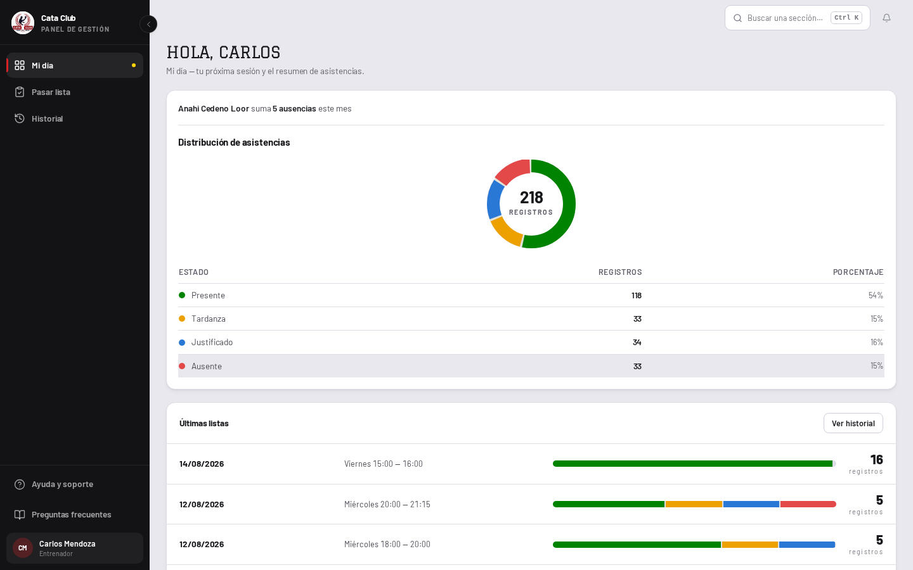
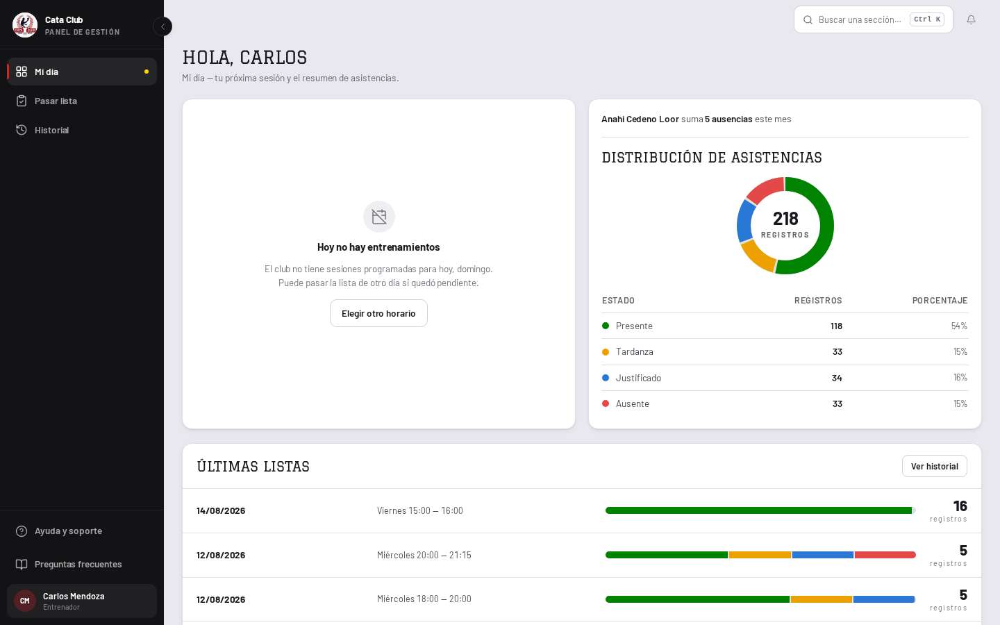
La salida del estado vacío no estrena una palabra. Dice «Elegir otro
horario», que es exactamente como la tarjeta de sesión nombra ese mismo destino en los
otros tres estados. Un segundo nombre para un mismo lugar es la deriva que el registro de
destinos existe para cerrar, y un estado vacío no es excusa para abrirla. Y el motivo se
deriva del dato: «El club no tiene sesiones programadas para hoy, domingo» nombra
el día que devuelve todayDiaSemana(), no una cadena fija.
SessionCard sigue renderizando nada cuando su estado es
null. Esa guarda es la regla de seguridad alrededor de la que está construido
el componente entero —tres de sus cuatro estados no tienen sesión a la que apuntar y
ninguno puede dejar un horario= en el árbol— así que el enunciado del domingo
vive en la página, en el hueco que la tarjeta deja, y no adentro del componente. Los cuatro
tests que fijan esa guarda siguen verdes sin tocarlos.
5 · Pasar lista — el ancho que nunca se aplicó
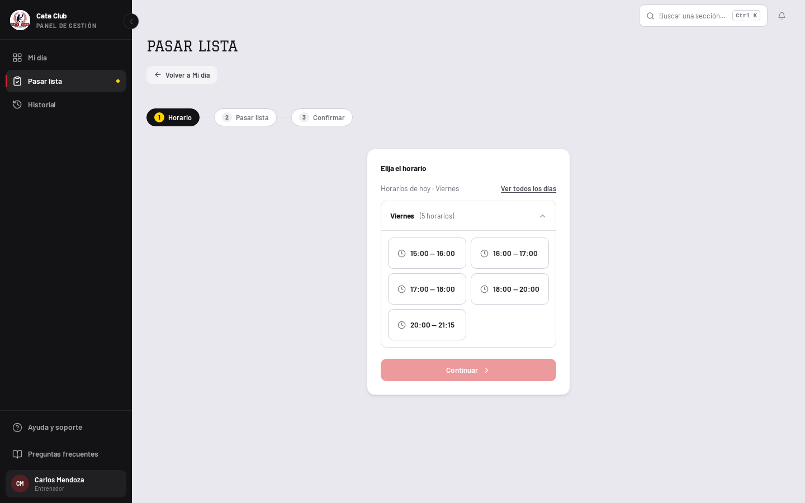
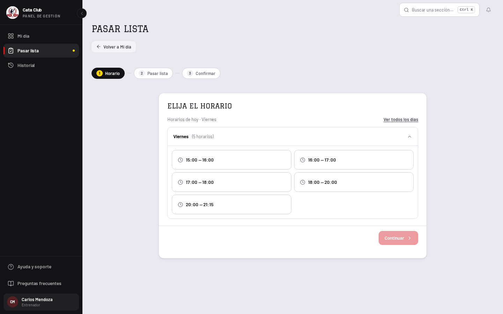
En la tanda del socio el problema fue margin-top: auto sin nada estirado. Acá
es el mismo mecanismo mirando al otro eje: mx-auto en un ítem flex
cancela el align-items: stretch de su contenedor, así que
<main> —que es una columna flex— dejaba a la tarjeta en shrink-to-fit y
max-w-3xl capaba un ancho que jamás se alcanzaba. La prueba está en que los
tres pasos medían distinto: el paso 2, con dieciséis filas de alumno adentro, llegaba a
764px y parecía correcto; el paso 1, con cinco botones de hora, se quedaba en 364. El tope
no estaba gobernando nada — gobernaba el contenido. Un w-full lo arregla, y
los tres pasos miden 768 desde entonces.
-
Un botón primario no es una barra.
«Continuar» era rojo, deshabilitado y de ancho completo dentro del contenido del paso, mientras los pasos 2 y 3 commiteaban desde una barra
sticky bottom-0con el botón a la derecha. Eran dos lugares y dos formas para la misma clase de decisión — el «un botón por acá y otro por allá» del cliente, dentro de un mismo asistente. Ahora los tres pasos tienen la misma barra, y el primario mide los 40px del sistema en los tres. El paso 1 conserva su propio manejador y su propiakey: carga el listado, no avanza un paso, y mezclar los dos nodos es exactamente el defecto que la nota del archivo ya documenta. -
La leyenda de cinco fichas, detrás de «Ver ayuda».
D11c: el subtítulo dice qué es y todo lo que explica cómo funciona se guarda. Era una fila permanente con las cuatro insignias de estado, la ficha punteada de «Sin revisar» y la frase «Toque la ficha para confirmar o cambiar» — encima de un listado donde cada fila ya imprime su propio estado como insignia con su nombre. La leyenda entera está en
ContextualHelp, con la frase que explica el borde punteado, que es la única parte que no se deduce mirando. -
La barra de totales se rompía en medio de una frase.
«16 Presentes · 0 Tardanzas · 0 Justificados · 0 Ausentes · 16 sin / revisar», partido en dos líneas. Cada total es ahora un ítem
whitespace-nowrapde una tira que envuelve entre ítems, que es donde un salto de línea dice algo.
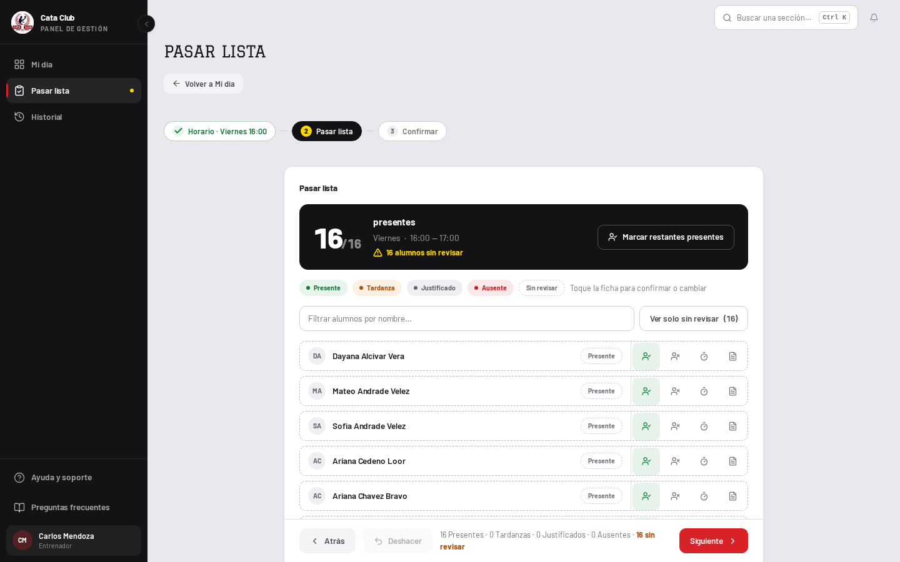
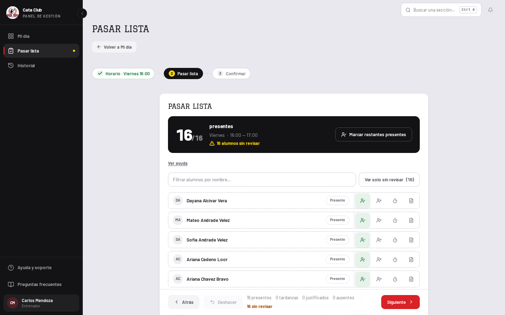
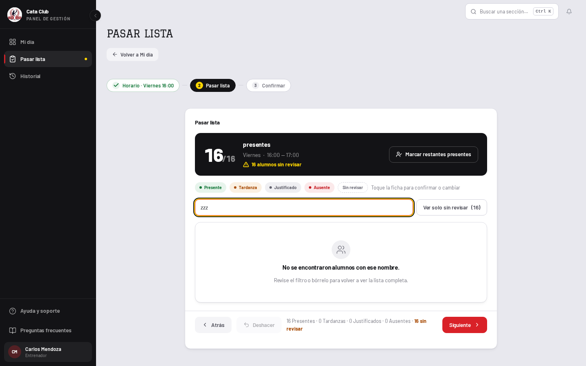
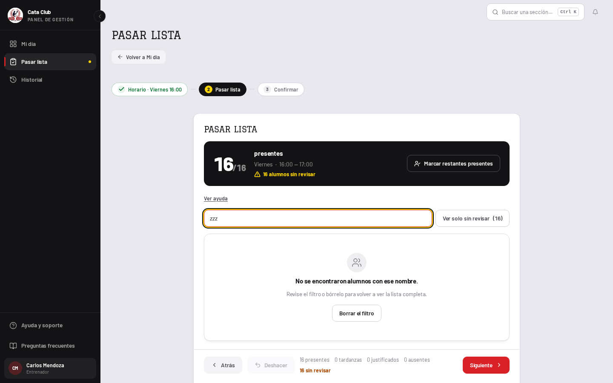
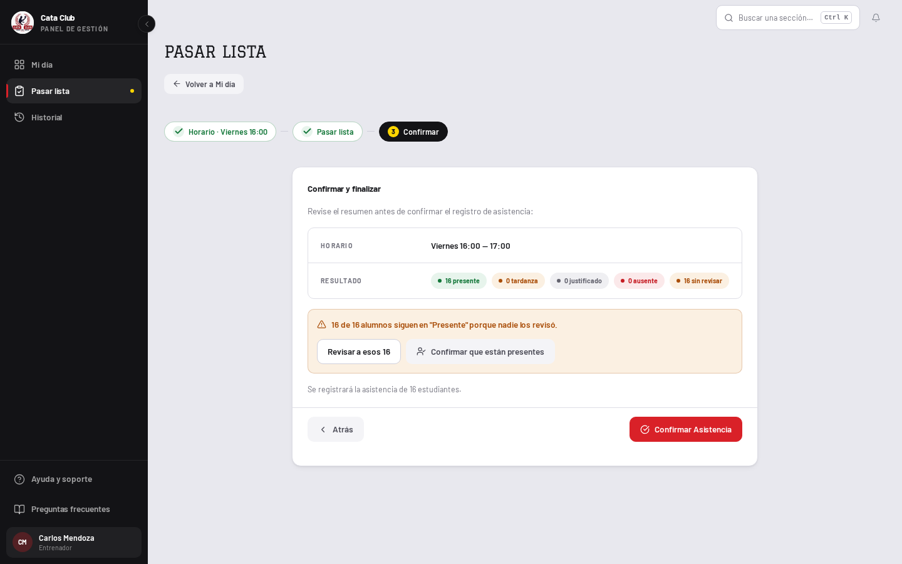
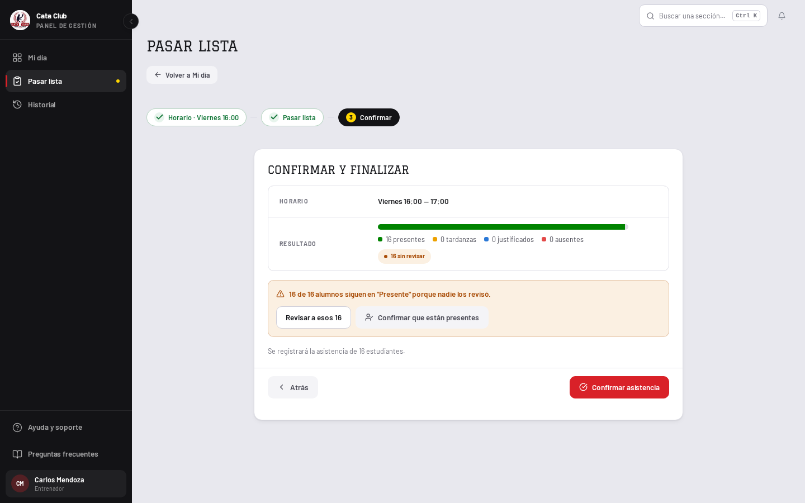
6 · El historial — cuarenta píldoras por página
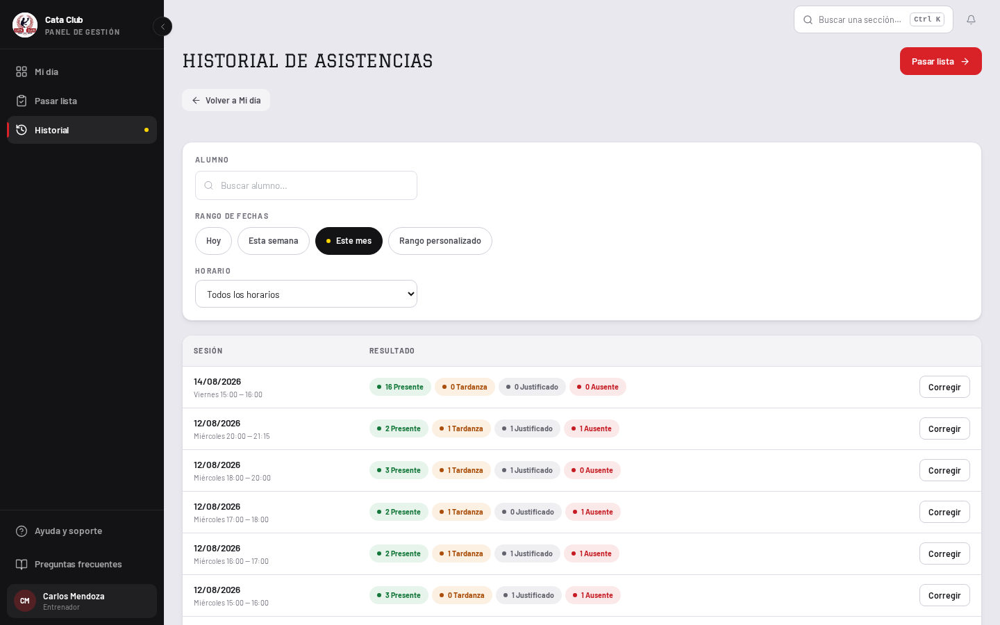
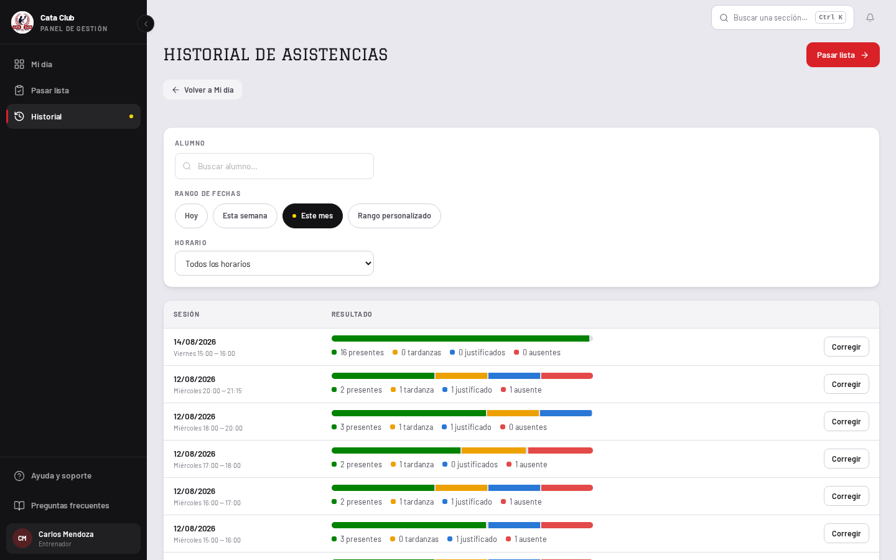
-
La barra ya existía, con su porqué escrito, a un archivo de distancia.
RecentSessionsList.tsxretiró esta misma tabla de insignias en «Mi día» y dejó anotado el motivo: el sistema reserva el color para insignias y píldoras, y cuatro tonos por fila compiten con el CTA rojo de la pantalla. El historial nunca recibió ese pase. Las dos piezas viven ahora enSessionComposition.tsxy las usan las tres pantallas — «Últimas listas», el historial y los dos pasos finales del asistente. -
El recibo dibujaba la quinta versión, con otra paleta.
Su barra usaba la rampa de estados del sistema (ok / warn / neutro / malo) y las otras usan la paleta validada de la dona. El resultado: «justificado» era gris en el recibo y azul en «Últimas listas», para la lista que el entrenador acababa de archivar. Y la rampa era además la elección equivocada para una barra: el propio
dashboard-utils.tsdice que los tokens de insignia «fallan los chequeos de pares adyacentes para daltonismo y visión normal cuando se ponen lado a lado en un gráfico», que es literalmente lo que es una barra proporcional. Gana la paleta validada; las insignias se quedan con la rampa de estados, porque una insignia es una píldora sola y no un segmento contra tres vecinos. -
Y de paso se retiró la tercera tabla de sustantivos.
Los mismos cuatro estados tenían su singular y su plural escritos tres veces: en la etiqueta accesible de la barra, en la barra de totales del asistente y —mal, en singular— en cada insignia. Queda
formatStateCount(estado, n), que es la única forma en que este producto cuenta un estado en voz alta.

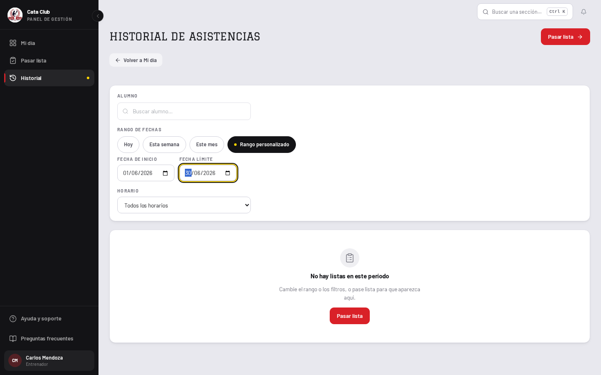
7 · La deuda anotada, cerrada
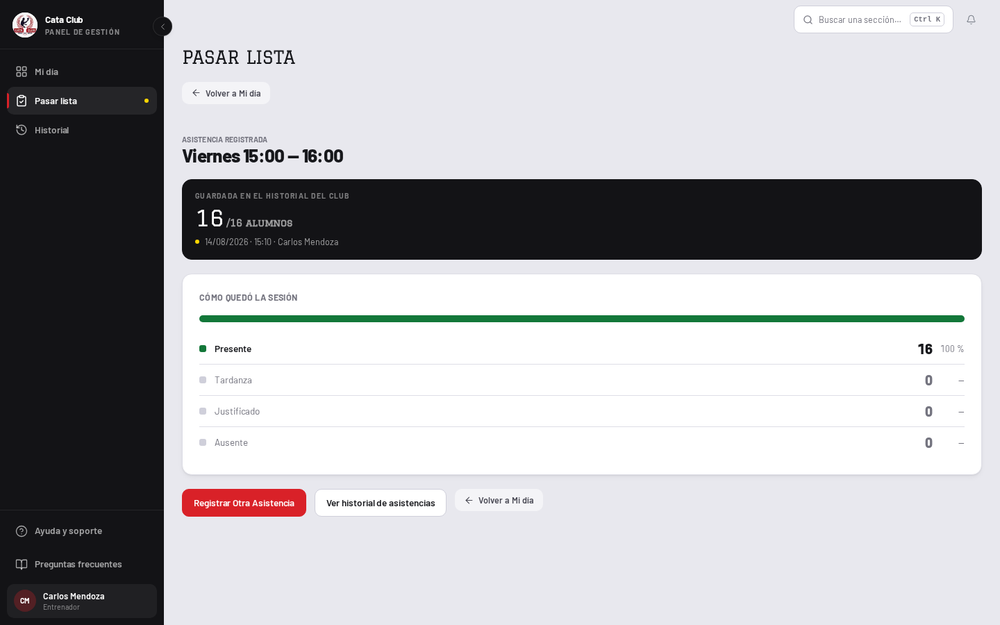
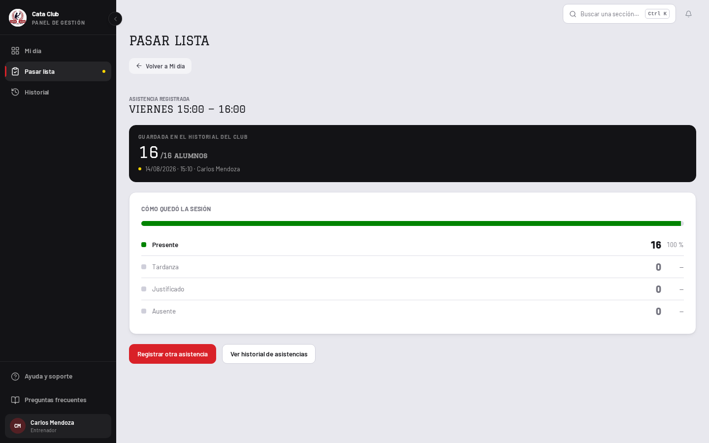
-
Se queda el del marco, y el motivo no es de gusto.
Es el que todas las demás pantallas del panel llevan en el mismo lugar, es el que sobrevive a que el recibo aparezca y desaparezca —el arreglo de #213 fue justamente que no se escondiera al confirmar— y
DESIGN.mdpone a volver en el último lugar de la jerarquía de una pantalla: no pertenece a la fila que dice qué hacer a continuación. El test que lo asertaba como tolerado ahora asierta que hay uno, con el porqué escrito adentro. -
Y las mayúsculas.
«Registrar Otra Asistencia» y «Confirmar Asistencia» eran los dos únicos rótulos en Mayúsculas De Título del panel del entrenador, al lado de «Ver historial de asistencias» y «Marcar restantes presentes». Ahora escriben como habla el resto de la interfaz. Son 26 llamadas de test actualizadas y ni una sola aserción de comportamiento tocada.
8 · Lo que no se tocó, y por qué
-
getAreaLabel— resuelto, y vale para todo el producto.Leía el rol colapsado, que es un solo valor elegido por precedencia, así que a un entrenador que además juega le decía «Panel de gestión» bajo la marca mientras el riel debajo le dibujaba un grupo «Mi cuenta»: el shell contradiciéndose a dos filas de distancia. Lee el mismo arreglo de roles que el riel, y cuando la persona abarca las dos áreas no nombra ninguna — los rótulos por grupo ya las nombran bien 40px más abajo, y una etiqueta sola solo podría ser media verdad. Es comportamiento visual, no de permisos: la precedencia de rol que gobierna guardas y redirecciones no se tocó.
-
La paleta de la dona, y con ella el panel del admin.
La barra de composición usa
ATTENDANCE_STATUS_CHART_COLORS, que está validada con el guión de la skill de dataviz para pares adyacentes. No es una paleta deDESIGN.md: es una quinta lista de colores viviendo endashboard-utils.ts. Reconciliarla con la rampa de estados —o declararla enDESIGN.mdcomo lo que es— toca la dona del panel de administración y su validador, así que es trabajo de la tanda del admin y no de esta. Queda anotado acá para que llegue con su motivo. -
El panel de filtros del historial: 265px de alto en el tercio izquierdo.
Tres grupos apilados —alumno, rango, horario— usando un tercio del ancho, con dos tercios de tarjeta vacía al lado. Es el componente
AttendanceFilters, que/attendance—la pantalla gemela del admin— dibuja igual. Arreglarlo acá lo arregla allá también, y eso es exactamente por qué no se hace en esta tanda: la distribución correcta se decide mirando las dos, y la del admin todavía no se capturó. -
Los 214px de aire bajo el paso 1, y los 201 bajo el paso 3.
Medidos y sin cerrar. El paso 1 hace una pregunta con cinco opciones y el paso 3 muestra un resumen de dos filas: son cortos porque preguntan poco, como el login que el README ya lleva declarado. Estirar la tarjeta al alto de la ventana mueve el hueco adentro de un borde, que se ve más y no menos — la tanda del socio ya midió esa reversión con 200px de marco vacío bajo una sola fila. Y lo único que llenaría el paso 1 con contenido real —cuántos alumnos tiene cada horario— exige una llamada nueva; ver el punto siguiente.
-
Cuántos alumnos tiene cada horario, en el selector del paso 1.
Es lo que le falta a esa pantalla para decidir bien —y es el mismo movimiento con el que la issue #211 llenó la tarjeta del tablero: contenido real, no relleno—. El dato existe y la llamada existe:
fetchRosterDeTodosLosHorarios, la misma que «Mi día» ya hace de a una. Pero agregarla acá es una petición de red nueva en una pantalla que hoy no la hace, y eso es comportamiento. No se inventó el dato ni se agregó la llamada: queda propuesto, con su costo declarado, para una issue que pueda medirlo. -
La lista sin alumnos — el estado flaco que este dataset no puede alcanzar.
El estado vacío del listado («Este horario no tiene alumnos asignados») existe en el código y no se pudo capturar: los 26 horarios del club tienen entre 12 y 16 alumnos asignados, y crear un horario vacío para la foto lo rechaza una regla de negocio —cada categoría tiene sus días fijos y las 26 combinaciones válidas ya existen—. Vaciar un horario de verdad para sacar una captura es mover datos de asistencia reales, que es exactamente lo que D14 prohíbe. En su lugar se capturó el estado flaco que sí es alcanzable: el filtro por nombre sin coincidencias.
-
La columna «Registró» que sigue sin existir.
Asistenciano guarda quién pasó la lista y es una decisión, no un olvido (modelos.py:536, issue #13). Ni el historial ni «Últimas listas» crecen una columna para llenar ese hueco, y el recibo sigue firmando con el nombre de la sesión activa, que es lo único que el frontend sabe de verdad.
9 · Cómo verificarlo
Suite completa, tipos y lint sobre este cambio:
npm test — 187 archivos, 3101 tests, todo en verde (eran 3090; el neto son once casos nuevos y seis renegociados).
npm run type-check — sin errores.
npm run lint — sin advertencias.
Los seis tests renegociados llevan el motivo escrito adentro, que es la única forma en que un
candado se puede aflojar: la cifra grande de SessionCard y de
TrainerPage, el enunciado del domingo, los dos controles de volver, las cuatro
insignias del historial y la etiqueta accesible de la barra del recibo. Ninguno se relajó:
los seis siguen fallando si vuelve lo que venían a impedir, y los que protegen comportamiento
—qué sesión encabeza, a qué enlace apunta cada fila, que ningún estado sin sesión deje un
horario= en el árbol, que el asistente no archive una sesión desde el paso
2— no se tocaron.
Las capturas se regeneran con el guión de medición contra QA en
http://localhost:3000, a 1440×900, entrando con
entrenador@cataclub.com y con el reloj del navegador fijado por toma. El índice
de todas las comparaciones está en README.md.